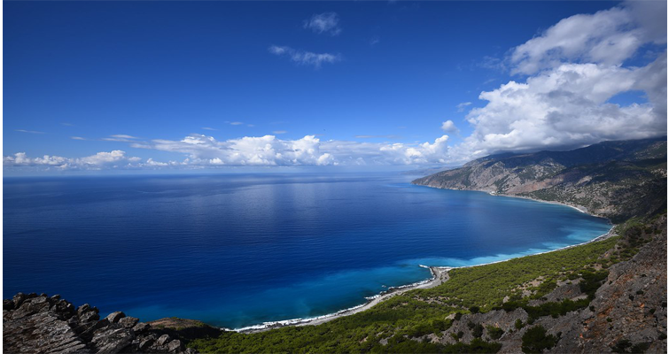
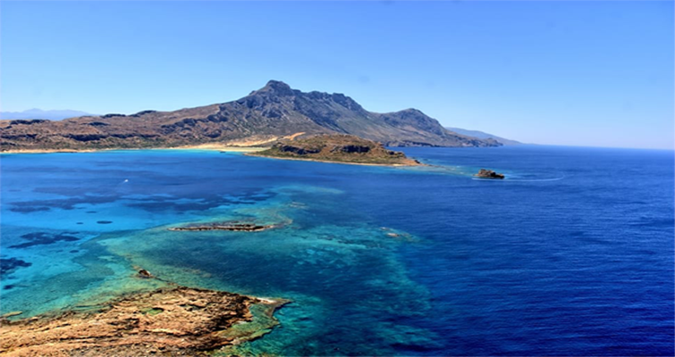
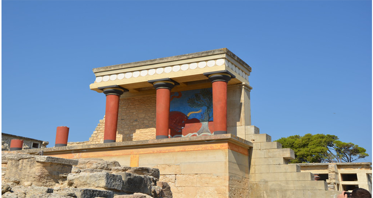
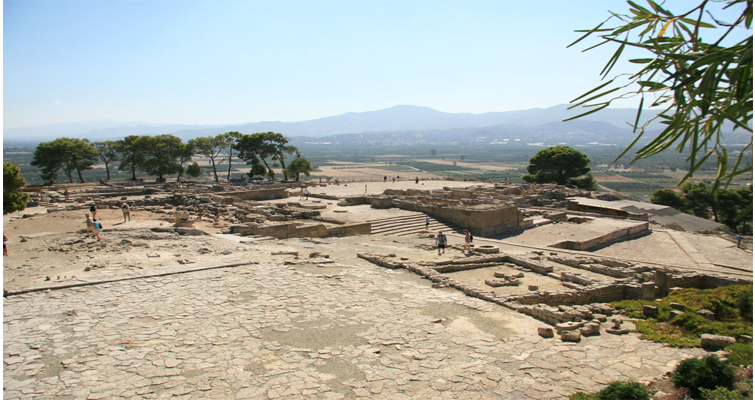
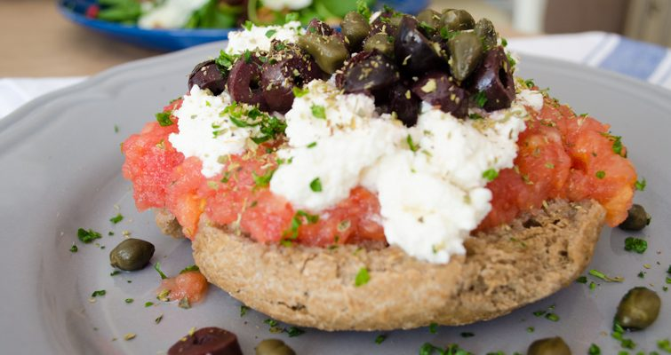
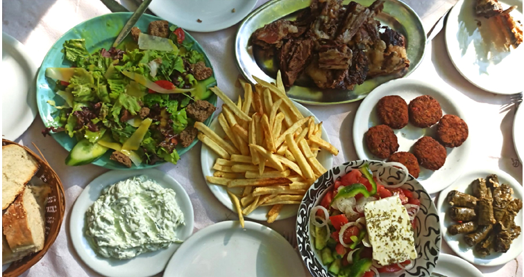

Crete






❮
❯
Matala
Matala is a village located in the southern part of Crete, specifically in the Phaistos region. It is a well known alternative touristic destination since the 60's.
It has a golden beach with a rocky landscape and many caves, which were originally empty, later inhabitated from certain groups of people.
Currently, the caves are available to the public to visit.
Heraklion
Heraklion is the largest city in Crete and the 4th largest city in Greece, with about 174,000 permanent residents.
Very important landmarks are the Minoan palaces of Knossos and Phaistos, which are available to visit.
It is also famous for its beaches, especially in the southern part, where the clear blue sea and the fine sand, create a beautiful landscape.
The Cuisine
Cretan cuisine has its roots in the Mediterranean diet. Providing a variety of flavors from different kinds of food, it is considered one of the most outstanding Greek cuisines.
Some of its most famous dishes are dakos(rusk with tomato, oil, oregano and sour mizithra, a local white cheese), apaki (smoked pork) and snails cooked in various recipes.
Matala village has many restaurants, ready to serve you and provide you quality A dishes, made with local products and passion.
Other Destinations
If you don't want to limit your vacation to Heraklion and Matala, there are many other destinations to trip to.
In the prefecture of Rethimno, besides the picturesque city of Rethimno, with its alleys and the old port, there are beautiful beaches along the southern coast of Crete, one hour away from Matala.
In the prefecture of Chania, the most important attraction is the Samaria gorge, which is considered the second largest gorge in Europe, with length between 13 and 16 km. It also has beautiful beaches such as Balos and Falasarna.